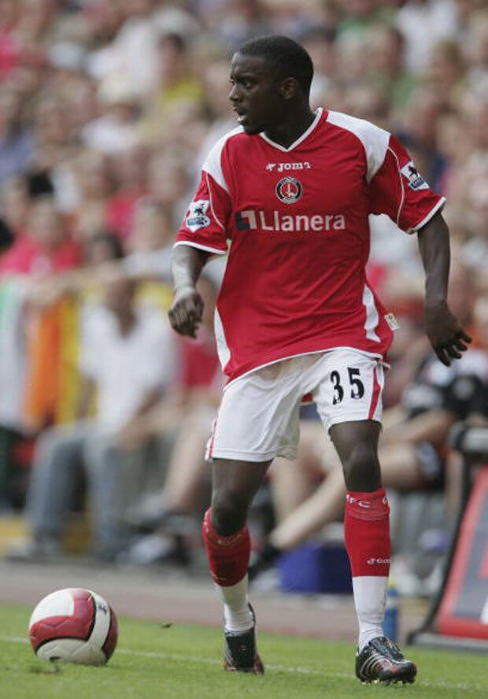

Winger Jailed For Armed Robbery
Nathan Ashton was a promising winger who played for Charlton Athletic and Fulham in his early years while representing England at the youth level, but he struggled for playing time in the top flight and quickly fell out of the Football League. The story goes that the 36-year-old developed a gambling habit while in the Premier League and racked up insurmountable debt. Ashton turned to a life of crime to pay it back - and he would face the consequences for it.
A season later, Ashton finally got his call-up at club level. He was an unused substitute for one game, then came off the bench to make his first-team debut in the League Cup against Carlisle United on September 19, 2006. It was the only game he’d end up playing for Charlton, but he still had a second chance with Fulham.